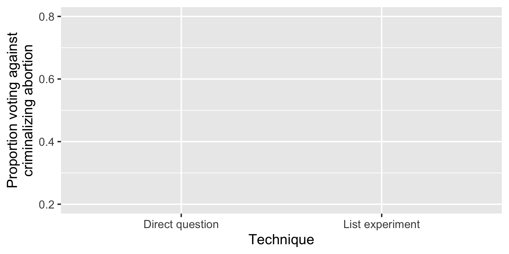
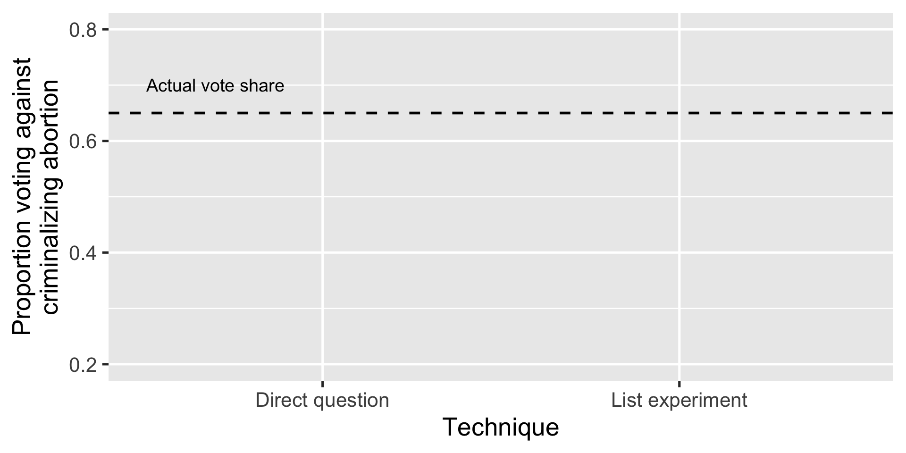
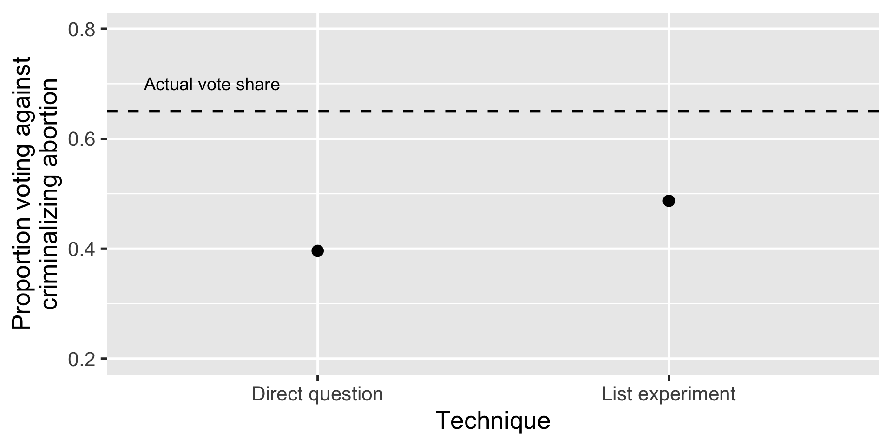
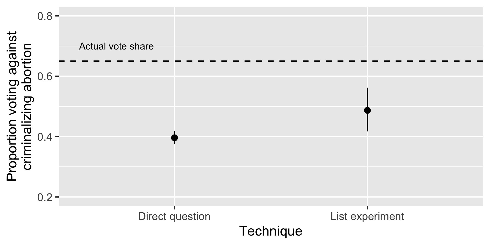
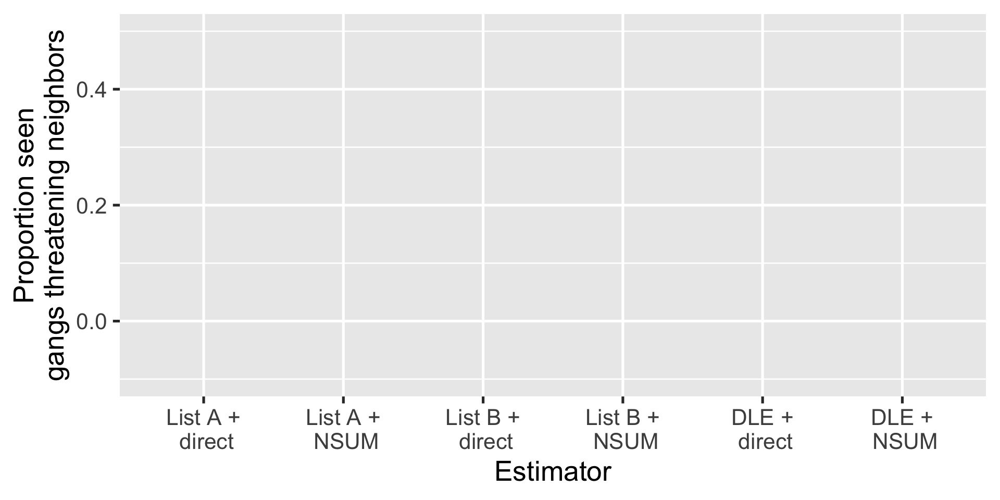
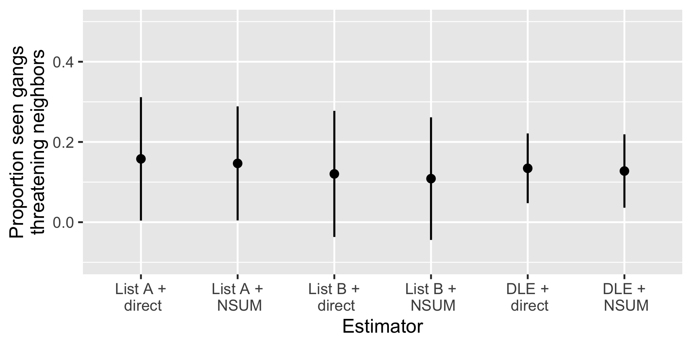

Combining List Experiments and the Network Scale Up Method
Gustavo Díaz
Northwestern University
gustavo.diaz@northwestern.edu
Verónica Pérez Bentancur
Universidad de la República veronica.perez@cienciassociales.edu.uy
Ines Fynn
Universidad Católica del Uruguay
ines.fynn@ucu.edu.uy
Lucía Tiscornia
University College Dublin
lucia.tiscornia@ucd.ie
Paper and slides: gustavodiaz.org/talk

List experiment
Now I am going to read you things that make people angry or upset
List experiment
After I read them all, tell me HOW MANY of them upset you
List experiment
I don’t want to know which ones, just tell me HOW MANY
Control group
- The federal government increasing tax on gasoline
- Professional athletes getting million dollar contracts
- Large corporations polluting the environment
List experiment
I don’t want to know which ones, just tell me HOW MANY
Treatment group
- The federal government increasing tax on gasoline
- Professional athletes getting million dollar contracts
- Large corporations polluting the environment
List experiment
I don’t want to know which ones, just tell me HOW MANY
Treatment group
- The federal government increasing tax on gasoline
- Professional athletes getting million dollar contracts
- Large corporations polluting the environment
- A black family moving next door
Reduces bias but increase variance
Reduces bias but increase variance

Reduces bias but increase variance

Reduces bias but increase variance

Solutions
Ways to reduce variance in list experiment estimates:
Negatively correlated items (Glynn 2013)
Covariate adjustment (Blair and Imai 2012)
Auxiliary information (Chou 2020)
Double list experiments (Miller 1984)
Combine with direct questions (Aronow et al 2015)
Solutions
Ways to reduce variance in list experiment estimates:
Negatively correlated items (Glynn 2013)
Covariate adjustment (Blair and Imai 2012)
Auxiliary information (Chou 2020)
Double list experiments (Miller 1984)
Combine with direct questions (Aronow et al 2015)
Combined estimator
- Logic: You don’t need a list experiment for those who admit to the sensitive item in the direct question
\[ \hat{\mu} = \overline{Y} + (1 - \overline{Y}) (\overline{V}_{1,0} - \overline{V}_{0,0}) \]
\(\overline{Y}\): Proportion confess in direct question
\((\overline{V}_{1,0} - \overline{V}_{0,0})\): List experiment estimate among those not confessing
Combined estimator
- Logic: You don’t need a list experiment for those who admit to the sensitive item in the direct question
\[ \hat{\mu} = \underbrace{\overline{Y} + (1 - \overline{Y}) (\overline{V}_{1,0} - \overline{V}_{0,0})}_{\text{Weighted average of prevalence rates}} \]
Problem
Can’t always include direct questions
Need an indirect questioning technique that lets us infer individual responses to sensitive item
But most rely on anonymity
Can’t combine without extra modeling assumptions or altered designs
Network Scale-Up Method (NSUM)
How many people do you know,
Network Scale-Up Method (NSUM)
How many people do you know, who also know you,
Network Scale-Up Method (NSUM)
How many people do you know, who also know you, with whom you have interacted in the last year
Network Scale-Up Method (NSUM)
How many people do you know, who also know you, with whom you have interacted in the last year in person, by phone, or any other channel.
- Named Michael
- Named Christina
- Gave birth in the past 12 months
- Commercial pilots
- Have tested positive for HIV
Why NSUM?
- Can infer individual responses to sensitive item
Assumption: Symmetrical exposure
If someone knows an unusually large number of people with the sensitive item, then they are likely to hold the sensitive item too.
- If true, can use NSUM responses instead of direct questions
- Goal: Find individuals with large sensitive network relative to personal network
Hierarchical model
\[ \begin{align*} y_{ik} \sim \text{negative-binomial}( & \text{mean} = e^{\alpha_i + \beta_k},\\ & \text{overdispersion} = \omega_k) \end{align*} \]
\(y_{ik}\): Degree of group \(k\) for person \(i\)
\(\alpha_i\): Expected degree of person \(i\) (logged)
\(\beta_k\): Expected degrees of group \(k\) (logged)
\(\omega_k\): Controls variance in propensity to know someone from group \(k\)
Hierarchical model
Fit via MLE to estimate parameters
Focus on standardized residuals:
\[ r_{ik} = \sqrt{y_{ik}} - \sqrt{e \alpha_i + \beta_k} \]
- High residual: \(i\) knows a disproportionately high number of people in sensitive group \(k\) (given personal network and overall group size)
Application
Survey
Online sample in Montevideo, Uruguay
(N = 2688)Four criminal governance tools
Negative
- Threaten neighbors
- Evict neighbors
Positive
- Make donations to neighbors
- Offer jobs to neighbors
Survey
Online sample in Montevideo, Uruguay
(N = 2688)Four criminal governance tools
Negative
- Threaten neighbors
- Evict neighbors
Positive
- Make donations to neighbors
- Offer jobs to neighbors
Direct question
During the last six months, in your neighborhood, have you seen gangs…
- Threaten neighbors
- Evict neighbors
- Make donations to neighbors
- Offering jobs neighbors
- Blackmail neighbors
- Blackmail businesses
- Pay a neighbor’s phone or electricity bills
List experiments
Things people have experienced in the last six months:
| List A | List B |
|---|---|
| Saw people doing sports | Saw people playing soccer |
| Visited friends | Chatted with friends |
| Activities by feminist groups | Activities by LGBTQ groups |
| Went to church | Went to charity events |
List experiments
Things people have experienced in the last six months:
| List A | List B |
|---|---|
| Saw people doing sports | Saw people playing soccer |
| Visited friends | Chatted with friends |
| Activities by feminist groups | Activities by LGBTQ groups |
| Went to church | Went to charity events |
| Did not drink mate | Gangs threatening neighbors |
List experiments
Things people have experienced in the last six months:
| List A | List B |
|---|---|
| Saw people doing sports | Saw people playing soccer |
| Visited friends | Chatted with friends |
| Activities by feminist groups | Activities by LGBTQ groups |
| Went to church | Went to charity events |
| Gangs threatening neighbors | Did not drink mate |
NSUM
How many people do you know, who also know you, with whom you have interacted in the last year in person, by phone, or any other channel
- 15 reference groups + sensitive item (range 0-10+)
- Recode
\[ Y_i^{\prime} = \begin{cases} 1, &\text{ if } r_{ik} > Mean(r_{ik}) + SD(r_{ik})\\ 0, &\text{ otherwise} \end{cases} \]
Combined estimates

Combined estimates

More generally
NSUM informative if direct question informative
NSUM can be informative if direct question uninformative
Variance reduction equal or higher with NSUM
Summary
Direct questions can help improve statistical precision list experiments
Concern using direct questions to begin with
Can use NSUM in the same way
Only in applications where symmetrical exposure is plausible
Logic applies to other strategies to improve precision, other indirect questioning techniques
NSUM groups
From Las Piedras
Male 25-29
Police officers
University students
Had a kid last year
Passed away last year
Married last year
Female 45-49
Public employees
Welfare card holders
Registered with party
With kids in public school
Did not vote in last election
Currently in jail
Recently unemployed [Sensitive item]